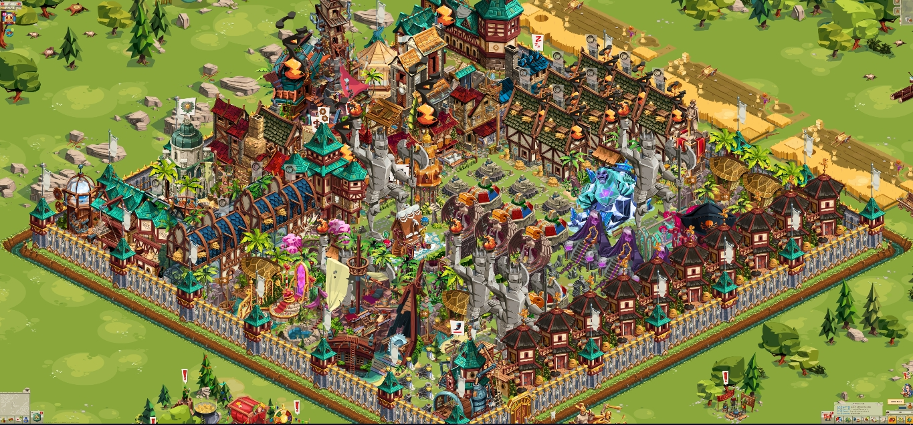
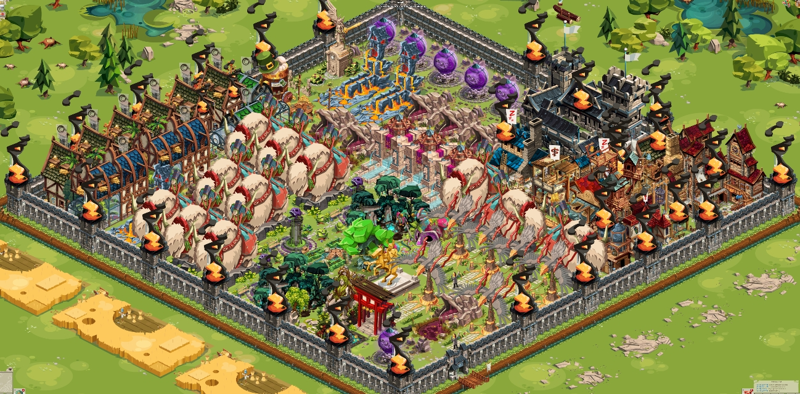
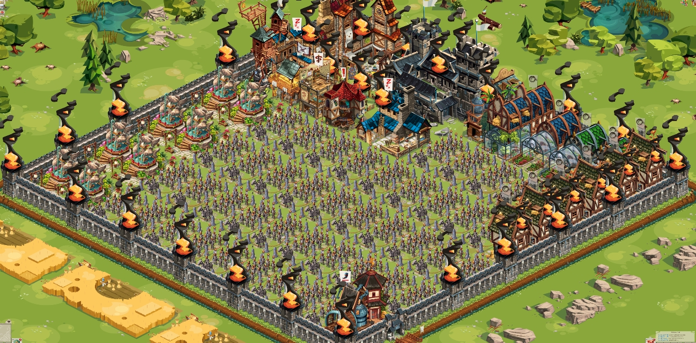
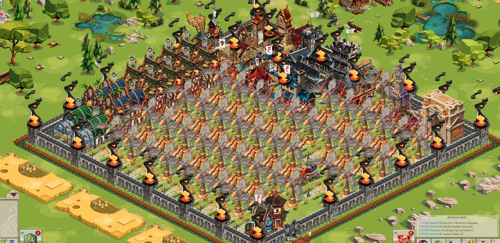
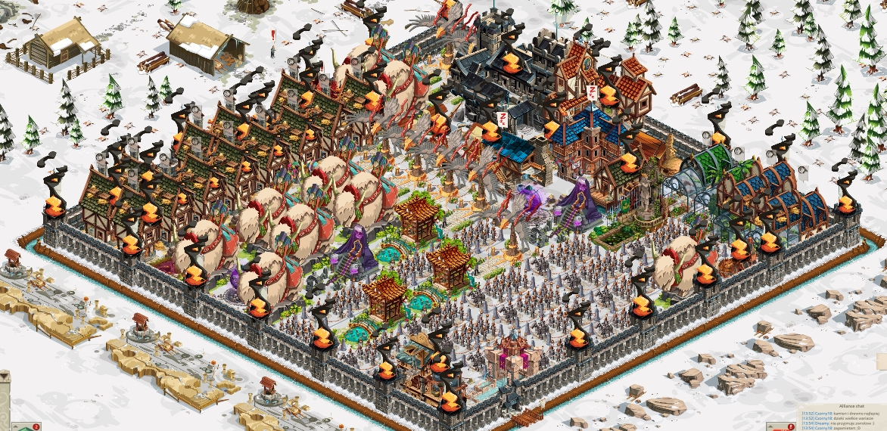
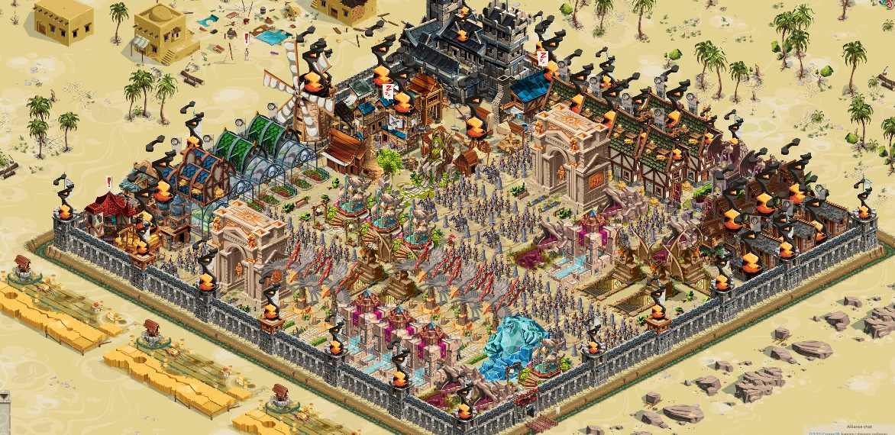
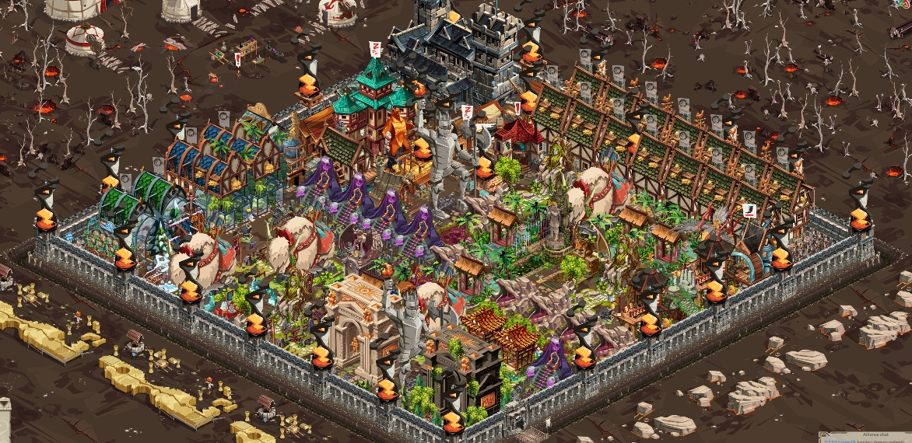

Zamek główny
Porządek publiczny : 95 263
- Produkcja miodu pitnego 159.83k
- Produkcja jedzenia 65k
- Produckja miodu 24k

Post 1 - WojtS 1
Porządek publiczny : 16 435
- Produkcja miodu pitnego 0k
- Produkcja jedzenia 24k
- Produckja miodu 0k

Post 2 - WojtS 2
Porządek publiczny : 12 145
- Produkcja miodu pitnego 3.3k
- Produkcja jedzenia 18k
- Produckja miodu 3k

Post 3 - WojtS 3
Porządek publiczny : 14 180
- Produkcja miodu pitnego 0k
- Produkcja jedzenia 20k
- Produckja miodu 847

Zima
Porządek publiczny : 12 598
- Produkcja miodu pitnego 0k
- Produkcja jedzenia 25k
- Produckja miodu 0k

Piaski
Porządek publiczny : 13 271
- Produkcja miodu pitnego 0k
- Produkcja jedzenia 14k
- Produckja miodu 0k

Szczyty
Porządek publiczny : 30 451
- Produkcja miodu pitnego 11.6k
- Produkcja jedzenia 40k
- Produckja miodu 2k